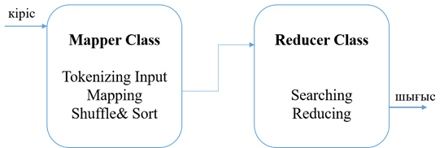

12. Hadoop. MapReduce. Алгоритмдері
1. MapReduce
негіздері
2. MapReduce алгоритмдері.
12.1 MapReduce негіздері
MapReduce-бұл компьютерлік кластерлердегі өте
үлкен (бірнеше петабайтқа дейін) мәліметтер жиынтығынан
параллель есептеу үшін Big Data технологиясында қолданылатын Google
компаниясының үлестірілген есептеу моделі және кластердің
түйіндерінде (node) үлестірілген есептерді есептеу үшін негіз
болып табылады. [36].
MapReduce-ті Big Data негізгі технологиясы деп атауға
болады, өйткені ол бастапқыда таратылған кластерлерде
параллель есептеуге бағытталған. MapReduce мәні - ақпараттық
массивті бөліктерге бөлу, әр бөлікті жеке түйінде
параллель өңдеу және барлық нәтижелерді түпкілікті
біріктіру.
MapReduce қолданатын бағдарламалар автоматты
түрде параллельденеді және кластердің таратылған түйіндерінде
орындалады, ал атқарушы жүйенің өзі іске асырудың
егжей-тегжейлеріне қамқорлық жасайды. Осының арқасында
бағдарламашылар бөлінген Big Data жүйелерінің
ресурстарын оңай әрі тиімді пайдалана алады.
Технология іс жүзінде әмбебап: оны веб-мазмұнды
индекстеу, үлкен файлдағы сөздерді санау, берілген мекен-жайға
қоңырау шалу жиілігін есептеу, белгілі бір хост түйінінің
әр URL мекен-жайындағы барлық веб-беттердің көлемін
есептеу, қажетті деректері бар барлық мекен-жайлардың тізімін
жасау және таратылған ақпараттың үлкен
массивтерін өңдеудің басқа міндеттері үшін
пайдалануға болады. Сондай-ақ, MapReduce қолдану салаларына
таратылған деректерді іздеу және сұрыптау, веб-сілтемелер
графигінің айналымы, желілік журнал статистикасын өңдеу,
индекстерді құру, құжаттарды кластерлеу, машиналық
оқыту және статистикалық машиналық аударма жатады.
Сондай-ақ, MapReduce мультипроцессорлық жүйелерге, ерікті
есептеулерге, динамикалық бұлтқа және мобильді ортаға
бейімделген.
Бұл есептеу моделінің авторлары функционалды
бағдарламалаудың екі процедурасын негізге алған Google қызметкерлері
Джеффри Дин (Jeffrey Dean) және Санжай Гемават (Sanjay Ghemawat) болып
саналады: тізімнің әрбір элементіне қажетті функцияны қолданатын
Map және жұмысының нәтижелерін біріктіретін reduce.
Бастапқыда MapReduce атауын Google патенттеген,
бірақ Big Data технологиялары дамыған сайын үлкен деректер әлемінің
жалпы тұжырым-дамасына айналды. Бүгінгі таңда таратылған
есептеудің осы моделін қолда-натын көптеген коммерциялық
және еркін өнімдер бар: Apache Hadoop, Apache CouchDB, MongoDB,
MySpace Qizmt және басқа да Big Data шеңберлері мен
кітапханалары әртүрлі бағдарламалау тілдерінде жазылған.
MapReduce-тің басқа танымал құралдарының ішінен
мыналарды атап өткен жөн [37]:
- Greenplum-Python, Perl, SQL және т.б. тілдерін қолдайтын
коммерция-лық іске асыру;
- GridGain-Java тілінде ақысыз және ашық
бастапқы бағдарлама;
- Phoenix-ортақ жады пайдалана отырып, С тілінде іске
асыру;
- MapReduce CUDA көмегімен NVIDIA GPU-де жүзеге
асырылады;
- Qt Concurrent-тапсырманы бір компьютердің бірнеше
ядролары ара-сында бөлу үшін C++ тілінде енгізілген жақтаудың
жеңілдетілген нұсқасы;
- CouchDB таратылған құжаттардың үстіндегі
көріністерді анықтау үшін MapReduce қолданады;
- Skynet - Ruby тілінде ашық бастапқы кодты
енгізу;
- Disco-Nokia компаниясының іске асыруы, оның
ядросы Эрланг тілінде жазылған және қосымшаларды Python-да
жасауға болады;
- Hive framework-MapReduce тәсілін біріктіруге және
SQL-ге ұқсас тілдегі деректерге қол жеткізуге мүмкіндік
беретін Facebook-тің ашық көзі;
- Qizmt-C-де жазылған MySpace-тен ашық бастапқы
кодты енгізу;
- DryadLINQ-PLINQ және Dryad негізінде Microsoft
Research жүзеге асыру.
12.2 MapReduce алгоритмдері
Ең алдымен, есептеу моделінің негізгі функцияларының
мағынасын тағы бір рет түсіндірейік:
- кіріске мәндер тізімін және белгілі бір
функцияны қабылдайды, содан кейін ол тізімнің әр элементіне қолданылады
және жаңа тізімді қайтарады;
- reduce (жинақтау) - берілген функцияның көмегімен
тізімді жалғыз атом мәніне түрлендіреді. Ол әр
итерацияда тізімнің жаңа элементі мен аралық нәтиже
беріледі.
MapReduce есептеу моделіне сәйкес деректерді өңдеу
үшін сіз осы екі функцияны анықтап, кіріс және шығыс
файлдарының аттарын, сондай-ақ өңдеу параметрлерін көрсетуіңіз
керек.
Есептеу моделінің өзі жоғарыда аталған
функциялардың 3 сатылы комбинациясынан тұрады:
Map-үлкен мәндер тізімі түрінде кіріс
деректерін алдын-ала өңдеу. Сонымен қатар, кластердің
негізгі түйіні (master node) бұл тізімді алады. Оны бөліктерге
бөледі және жұмыс түйіндеріне (worker node) жібереді. Әрі
қарай, әр жұмыс түйіні жергілікті деректерге Map
функциясын қолданады және нәтижені уақытша жадқа
«кілт мәні» форматында жазады.
Shuffle - жұмыс түйіндері бұрын Map
функциясы жасаған кілттер негі-зінде деректерді бір кілттің барлық
деректері бір жұмыс түйінінде болатындай етіп қайта бөледі.
Reduce-әрбір деректер тобының әрбір жұмыс
түйінімен кілттердің реті бойынша параллель өңдеу және
нәтижелерді master node-да «желімдеу». Негізгі түйін жұмыс түйіндерінен
аралық жауаптар алады және оларды келесі қадамды орындау үшін
бос түйіндерге жібереді. Барлық қажетті қадамдардан өткеннен
кейін алынған нәтиже - бұл бастапқы мәселенің
шешімі.
MapReduce көмегімен жазылған қосымшаның
канондық мысалы-бұл құжаттар жиынтығында әр
түрлі сөздердің қанша рет кездесетінін есептеу процесі:
[38]:
// Map-қадамда жұмыс кодтары қолданатын
функция
void map (String name, String document):
// Кіріс деректері:
// name-құжат атауы
// құжат-құжат мазмұны
for each word w
in document:
EmitIntermediate(w, "1");
// Жұмыс кодтары Reduce-қадамда қолданатын
функция
// map-қадамда алынған кілт-мән жұптарын
өңдеу үшін
void reduce(Iterator partialCounts):
// Кіріс деректері:
// partialCounts-топтастырылған аралық нәтижелердің
тізімі. PartialCounts-тегі жазбалар саны
// қажетті мән
int result = 0;
for each v in
partialCounts:
result +=
parseInt(v);
Emit(AsString(result));
Map қадамындағы осы кодта әр құжат
сөздерге бөлініп, жұптар қайтарылады, мұнда кілт
сөздің өзі және Мағынасы 1 болады. Егер құжатта
бір сөз бірнеше рет кездессе, онда бұл құжатты
алдын-ала өңдеудің нәтижесінде бұл жұп қанша
рет кездессе, сонша болады. Құрылған жұптар одан әрі
өңдеуге жіберіледі, жүйе оларды кілтпен топтастырады және
көптеген процессорларға таратылады. Топтағы бірдей кілті бар
нысандар жиынтығы reduce функция-сының кірісіне түседі.Ол
деректер ағынын қайта өңдейді және оның көлемін
азайтады. Бұл мысалда reduce функциясы берілген сөздің
кірістерін бүкіл ағынға қосады, ал нәтиже - бір ғана
сумма - одан әрі шығыс түрінде жіберіледі.
MapReduce алгоритмі екі маңызды тапсырманы қамтиды,
атап айтқанда Map және Reduce. Map тапсырмасы Mapper Class көмегімен
орындалады. Азайту міндеті редуктор класының көмегімен орындалады.
Mapper класы кірісті қабылдайды, оларды белгілейді,
көрсетеді және сұрыптайды. Mapper класының шығысы
Reducer класының кірісі ретінде пайдаланылады, ол өз кезегінде сәйкес
келетін жұптарды іздейді және оларды қысқартады (Сурет
11).

Сурет 11- MapReduce алгоритмі
MapReduce тапсырманы кішкене бөліктерге бөлу
және оларды бірнеше жүйелерге тағайындау үшін әртүрлі
математикалық алгоритмдерді қолданады. Техникалық тұрғыдан
алғанда, MapReduce алгоритмі Map & Reduce тапсыр-маларын кластердегі
тиісті серверлерге жіберуге көмектеседі.
Бұл математикалық алгоритмдер мыналарды қамтуы
мүмкін:
- Сұрыптау;
- Іздеу;
- Индекстеу;
- TF-IDF;
- Сұрыптау;
Сұрыптау-деректерді өңдеуге және
талдауға арналған негізгі MapReduce алгоритмдерінің бірі.
MapReduce түрлендіргіштен кілт-мән Шығыс жұптарын кілттері
бойынша автоматты түрде сұрыптау алгоритмін жүзеге асырады. Сұрыптау
әдістері mapper класында жүзеге асырылады.
Араластыру және сұрыптау кезеңінде,
салыстыру класындағы мәндерді таңбалағаннан кейін,
Context класы (пайдаланушы анықтаған класс) жиынтық ретінде сәйкес
келетін кілт мәндерін жинайды.
Ұқсас кілт-мән жұптарын (аралық
кілттер) жинау үшін Mapper класы кілт-мән жұптарын сұрыптау
үшін RawComparator класын пайдаланады.
Берілген редуктор үшін кілт-мән аралық
жұптарының жиынтығы Редукторға ұсынылғанға
дейін кілт мәндерін (K2, {V2, V2,.}) қалыптастыру үшін Hadoop
автоматты түрде сұрыпталады.
Сұрыптау әдістері mapper класында жүзеге
асырылады.
Араластыру және сұрыптау кезеңінде,
салыстыру класындағы мәндерді таңбалағаннан кейін,
Context класы (пайдаланушы анықтаған класс) жиынтық ретінде сәйкес
келетін кілт мәндерін жинайды.
Ұқсас кілт-мән жұптарын (аралық
кілттер) жинау үшін Mapper класы кілт-мән жұптарын сұрыптау
үшін RawComparator класын пайдаланады.
Берілген редуктор үшін кілт-мән аралық
жұптарының жиынтығы Редукторға ұсынылғанға
дейін кілт мәндерін (K2, {V2, V2,.}) қалыптастыру үшін Hadoop
автоматты түрде сұрыпталады.
Іздеу
Іздеу MapReduce алгоритмінде маңызды рөл атқарады.
Бұл біріктіргіш фазада (опция) және редуктор фазасында көмектеседі.
Индекстеу
Әдетте индекстеу нақты деректер мен олардың
мекен-жайын көрсету үшін қолданылады. Ол белгілі бір Mapper үшін
кіріс файлдарын пакеттік индекстеуді орындайды.
Әдетте MapReduce-те қолданылатын индекстеу әдісі
инверттелген индекс деп аталады. Google және Bing сияқты іздеу жүйелері
инверттелген индекстеу әдісін қолданады.
TF-IDF
TF-IDF-бұл қысқартылған мәтінді
өңдеу алгоритмі терминдердің жиілігі-құжаттың
кері жиілігі. Бұл веб-талдаудың кең таралған
алгоритмдерінің бірі. Мұнда «жиілік» термині құжатта термин
пайда болған уақыттардың санын білдіреді.
Жиілік термині
Ол құжатта белгілі бір терминнің қаншалықты
жиі кездесетінін өлшейді. Ол осы құжаттағы сөздердің
жалпы санына бөлінген құжаттағы сөздердің
пайда болу саны бойынша есептеледі.
TF (the) = (құжатта «the» термині пайда болған
уақыт саны) / (құжаттағы терминдердің жалпы саны)
Кері құжаттардың жиілігі(IDF)
Ол терминнің маңыздылығын өлшейді.
Ол белгілі бір термин пайда болатын құжаттар санына бөлінген
мәтіндік дерекқордағы құжаттар саны бойынша
есептеледі.
TF есептеу кезінде барлық терминдер бірдей маңызды
болып саналады. Бұл TF терминнің жиілігін «бар», «а», «не» және
т. б. сияқты қарапайым сөздер үшін есептейді дегенді
білдіреді:
IDF(the) = log_e (құжаттардың жалпы
саны / ондағы «the» терминімен құжаттар саны).
Бақылау сұрақтары:
1. MapReduce алгоритм құрауыштарын атаңыз.
2. MapReduce алгоритм әрбір құрауыштарының
міндетін сипаттаңыз.
3. Индекстеу қай кезде қолданылады?
4. Жиілік(TF) терминінің мәні неде?